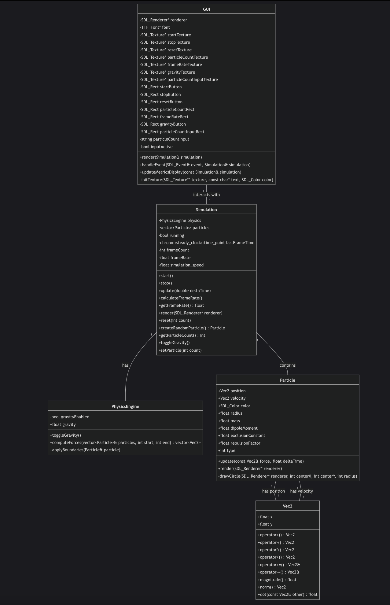
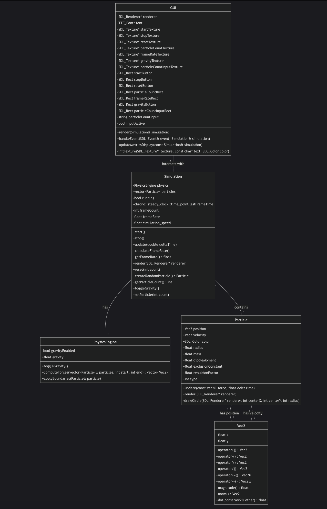

A highly optimized, real-time particle simulation engine.
ParticleBox is a C++-based, SDL2-accelerated particle simulator designed for real-time physics visualization. It simulates large swarms of particles interacting via forces such as gravity, repulsion, and boundary collisions.
To handle high particle counts efficiently, ParticleBox combines:
std::async and multiple threads to update particle subsets in parallel.At the core of our simulation are the individual particles, each with properties that determine their behavior in the system. The Particle class encapsulates the physics and rendering logic for a single simulation element.
Each particle tracks essential state information:
The particle update cycle implements basic Newtonian physics:
void Particle::update(const Vec2& force, float deltaTime) {
Vec2 acceleration = force * invMass;
velocity += acceleration * deltaTime;
position += velocity * deltaTime;
}
This semi-implicit Euler integration provides a good balance between stability and computational efficiency for real-time simulations.
Particles use velocity-based coloring to provide visual feedback about the system's dynamics:
void Particle::render(SDL_Renderer* renderer) {
// Error checking omitted for brevity
float speed = std::sqrt(velocity.x * velocity.x + velocity.y * velocity.y);
SDL_Color blue = {40, 40, 255, 255};
SDL_Color orange = {200, 20, 20, 55};
float maxSpeed = 50.0f;
float normSpeed = std::min(speed / maxSpeed, 1.0f);
SDL_Color color;
color.r = static_cast(blue.r + normSpeed * (orange.r - blue.r));
color.g = static_cast(blue.g + normSpeed * (orange.g - blue.g));
color.b = static_cast(blue.b + normSpeed * (orange.b - blue.b));
color.a = 255;
SDL_SetRenderDrawColor(renderer, color.r, color.g, color.b, 255);
drawCircle(renderer, static_cast(position.x), static_cast(position.y), static_cast(radius));
}
This approach creates a dynamic visual effect where faster-moving particles shift from blue to orange, providing immediate insight into the system's energy distribution.
The circle rendering algorithm uses a simple but efficient distance-based approach:
void Particle::drawCircle(SDL_Renderer* renderer, int centerX, int centerY, int radius) {
for (int w = 0; w < radius * 2; w++) {
for (int h = 0; h < radius * 2; h++) {
int dx = radius - w;
int dy = radius - h;
if ((dx * dx + dy * dy) <= (radius * radius)) {
SDL_RenderDrawPoint(renderer, centerX + dx, centerY + dy);
}
}
}
}
While more sophisticated approaches exist (like Bresenham's algorithm for circle rasterization), this method works well for the small particle sizes in our simulation.
The implementation uses robust error checking to prevent simulation crashes from floating-point errors:
The physics engine provides the computational backbone for particle interactions. It handles force calculations, collision detection, and position updates with a focus on performance.
The heart of the physics engine uses spatial partitioning to efficiently find potential collisions:
std::vector PhysicsEngine::computeForces(std::vector& particles, int start, int end) {
std::vector forces(end - start, Vec2(0, 0));
if (gridEnabled) {
const float cellSize = 8.0f;
const int windowWidth = 1200;
const int windowHeight = 800;
const int gridWidth = static_cast(std::ceil(windowWidth / cellSize));
const int gridHeight = static_cast(std::ceil(windowHeight / cellSize));
std::vector> cells(gridWidth * gridHeight);
for (int i = start; i < end; ++i) {
int cellX = static_cast(particles[i].position.x / cellSize);
int cellY = static_cast(particles[i].position.y / cellSize);
if (cellX < 0) cellX = 0;
if (cellX >= gridWidth) cellX = gridWidth - 1;
if (cellY < 0) cellY = 0;
if (cellY >= gridHeight) cellY = gridHeight - 1;
cells[cellY * gridWidth + cellX].push_back(i);
}
// Force calculations follow...
}
}
This approach divides the simulation space into a grid of cells, assigning each particle to a cell based on its position. During collision detection, only particles in adjacent cells need to be considered, dramatically reducing the number of comparisons.
When collisions are detected, the engine calculates appropriate repulsion forces:
Vec2 direction = particles[j].position - particles[i].position;
float distanceSq = direction.x * direction.x + direction.y * direction.y;
float combinedRadius = particles[i].radius + particles[j].radius;
float combinedRadiusSq = combinedRadius * combinedRadius;
if (distanceSq < combinedRadiusSq && distanceSq > 0.0f) {
float distance = std::sqrt(distanceSq);
Vec2 normal = direction / distance;
float overlap = combinedRadius - distance;
Vec2 repulsionForce = normal * (repulsionStrength * overlap);
netForce -= repulsionForce;
if (j >= start && j < end) {
forces[j - start] += repulsionForce;
}
}
This simplified impulse-based model provides convincing physical behavior while remaining computationally efficient.
The simulation ensures particles remain within the visible area:
void PhysicsEngine::applyBoundaries(Particle& particle) {
const int windowWidth = 1200;
const int windowHeight = 800;
const float velocityLossFactor = 0.9f;
if (particle.position.x > windowWidth) {
particle.position.x = windowWidth;
particle.velocity.x *= -velocityLossFactor;
}
if (particle.position.x < 0) {
particle.position.x = 0;
particle.velocity.x *= -velocityLossFactor;
}
if (particle.position.y < 0) {
particle.position.y = 0;
particle.velocity.y *= -velocityLossFactor;
}
if (particle.position.y > windowHeight) {
particle.position.y = windowHeight;
particle.velocity.y *= -velocityLossFactor;
}
}
This code creates elastic boundary collisions with a slight energy loss, preventing particles from escaping while adding realistic damping effects.
ParticleBox divides the workload across multiple threads, each handling a subset of particles:
void Simulation::update(double deltaTime) {
if (!running) return;
unsigned int numThreads = std::thread::hardware_concurrency();
if (numThreads == 0) {
numThreads = 4;
}
const size_t totalParticles = particles.size();
if (totalParticles == 0) {
calculateFrameRate();
return;
}
if (multithreadingEnabled) {
const size_t chunkSize = (totalParticles + numThreads - 1) / numThreads;
std::vector> futures;
futures.reserve(numThreads);
auto updateChunk = [this, deltaTime](size_t start, size_t end) {
if (end <= start) return;
std::vector forces = physics.computeForces(particles, static_cast(start), static_cast(end));
for (size_t i = start; i < end; ++i) {
Particle &p = particles[i];
p.velocity.x += (forces[i - start].x * p.invMass) * (float)deltaTime;
p.velocity.y += (forces[i - start].y * p.invMass) * (float)deltaTime;
p.position.x += p.velocity.x * (float)deltaTime;
p.position.y += p.velocity.y * (float)deltaTime;
physics.applyBoundaries(p);
}
};
size_t processed = 0;
for (unsigned int i = 0; i < numThreads; ++i) {
const size_t start = processed;
const size_t end = std::min(start + chunkSize, totalParticles);
processed = end;
if (start < end) {
futures.push_back(std::async(std::launch::async, updateChunk, start, end));
} else {
break;
}
}
for (auto& future : futures) {
future.get();
}
}
// Single-threaded fallback code follows...
}
This approach nearly linearly scales the simulation speed with the number of available CPU cores.
Several techniques are employed to optimize memory usage:
The simulation provides runtime-toggleable optimizations:
Simulation::Simulation()
: running(false),
frameCount(0),
frameRate(0.0f),
multithreadingEnabled(true),
gridEnabled(true),
reducedPairwiseComparisonsEnabled(true)
{
// Initialization code
physics.setGridEnabled(gridEnabled);
physics.setReducedPairwiseComparisonsEnabled(reducedPairwiseComparisonsEnabled);
}
These toggles allow for performance tuning based on the specific hardware capabilities and simulation requirements.
The simulation tracks its own performance to help identify bottlenecks:
void Simulation::calculateFrameRate() {
static std::chrono::steady_clock::time_point frameRateStartTime = std::chrono::steady_clock::now();
frameCount++;
auto currentTime = std::chrono::steady_clock::now();
double secondsPassed = std::chrono::duration_cast>(currentTime - frameRateStartTime).count();
if (secondsPassed >= 1.0) {
frameRate = frameCount / (float)secondsPassed;
frameCount = 0;
frameRateStartTime = currentTime;
}
}
This real-time performance monitoring helps evaluate the effectiveness of different optimization strategies.
For colliding particles, the distance \(d\) between particles is computed as:
\[ d = \sqrt{(p2.x - p1.x)^2 + (p2.y - p1.y)^2} \]
A collision occurs when \(d < (r1 + r2)\), where \(r1\) and \(r2\) are the radii of the particles.
The repulsion force magnitude \(F_r\) between overlapping particles is given by:
\[ F_r = k_{rep} \cdot \delta \]
Where \(\delta\) is the overlap distance \((r1 + r2) - d\), and \(k_{rep}\) is the repulsion strength constant.
The simulation uses semi-implicit Euler integration, updating velocity first, then position:
\[ \mathbf{v}_{t+\Delta t} = \mathbf{v}_t + \mathbf{a}_t \cdot \Delta t \] \[ \mathbf{p}_{t+\Delta t} = \mathbf{p}_t + \mathbf{v}_{t+\Delta t} \cdot \Delta t \]
This method provides better stability than explicit Euler integration while remaining computationally efficient.
Beyond the core physics engine, ParticleBox includes several advanced features that enhance its usability and flexibility.
The simulation allows for generating new particles at runtime:
void Simulation::spawnParticlesAtMouse(int x, int y, int count) {
particles.reserve(particles.size() + (size_t)count);
for (int i = 0; i < count; ++i) {
particles.push_back(createParticleAtPosition(x, y));
}
}
Particle Simulation::createParticleAtPosition(int x, int y) {
// Random initialization code omitted for brevity
Vec2 pos(static_cast(x), static_cast(y));
float angle = distAngle(rng);
float speed = distSpeed(rng);
Vec2 vel(std::cos(angle) * speed, std::sin(angle) * speed);
SDL_Color color = {
static_cast(distColor(rng)),
static_cast(distColor(rng)),
static_cast(distColor(rng)),
255
};
float radius = 2.0f;
float mass = radius / 2.0f;
float dipoleMoment = 0.0f;
float exclusionConstant = 0.0f;
float repulsionFactor = 1.0f;
int type = 0;
return Particle(pos, vel, color, radius, mass, dipoleMoment, exclusionConstant, repulsionFactor, type);
}
This feature allows for interactive simulation manipulation, such as adding particles at the cursor location.
To ensure consistent simulation behavior across different hardware, ParticleBox implements frame rate limiting:
auto currentTime = std::chrono::steady_clock::now();
auto frameDuration = std::chrono::duration_cast(
currentTime - lastFrameTime
);
constexpr int targetFrameDuration = 16; // Target ~60 FPS
if (frameDuration.count() < targetFrameDuration) {
std::this_thread::sleep_for(
std::chrono::milliseconds(targetFrameDuration - frameDuration.count())
);
}
This approach prevents the simulation from running too fast on high-performance systems while maintaining smooth animation.
To support multithreaded particle creation, the simulation uses thread-local random number generators:
static thread_local std::mt19937 rng(static_cast(std::time(nullptr)) ^
static_cast(std::hash{}(std::this_thread::get_id())));
This technique prevents contention between threads while ensuring that each thread's random sequence is properly seeded.
 
